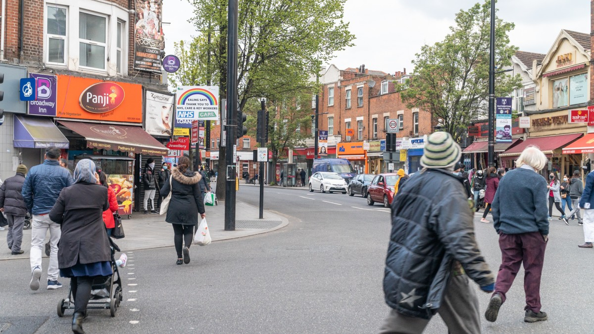

Southall is a large district located in West London and it is part of the London Borough of Ealing. It is known for its vibrant multicultural community, especially its strong South Asian influence.
It has one of the largest South Asian populations in the UK, with a lot of people from India, Pakistan, and Sri Lanka. This influence is reflected in local businesses, religious centers, festivals, and day to day life.
Southall is well-connected by rail with its station offering services on the Great Western Railway. The station is also part of the Elizabeth Line, making access to central London faster and easier. It is also serviced by multiple London bus routes such as the E5, 105 and 483.
Southall's strong South Asian influence makes it a top spot for South Asian cuisines. There is a wide range of restaurants which cater to almost everyone's tastes, serving foods such as samosas, biryanis and curries. Don't forget the sweet jalebi and gulab jamun!
It's large South Asian population also means that it has a wide range of traditional clothes, with shops selling saris for women and kurtas for men.
Southall has several primary and secondary schools that cater to its large population, as well as community education centers that offer adult learning opportunities. It’s a family-friendly area with many facilities for residents.
It's large population of Asians puts it at one of the highest in England. Here is a table showing the comparison.
| Southall | England | |
|---|---|---|
| White | 35.9% | 81.0% |
| Asian | 40.4% | 9.6% |
| Black | 10.5% | 4.2% |
| Mixed | 4.1% | 3.0% |
| Other | 9.1% | 2.2% |
Visit this website for more information on ethnic groups in England.
Visit this website for more information on ethnic groups in Southall.
Southall has more than quadruple the percentage of Asians in England! It has a higher percentage for most ethnic groups except for the White ethnic group.
Compared to central London, Southall offers relatively affordable housing making it an attractive area for families and new immigrants.
The area has a mix of terraced houses and modern flats.
In recent years, the area has been undergoing regeneration with new housing developments, improved transport links, and efforts to modernize the area while preserving its cultural heritage.
The economy is driven by small and medium sized businesses, with most of them in retail, catering, and services, catering to both the community and visitors.
To conclude, Southall is a unique and vibrant part of London that offers a rich blend of cultures, heavily influenced by South Asian traditions. It’s a hub for cultural activities and cuisine with a strong sense of community. It’s diversity combined with its modern developments makes it an attractive destination for both residents and visitors.